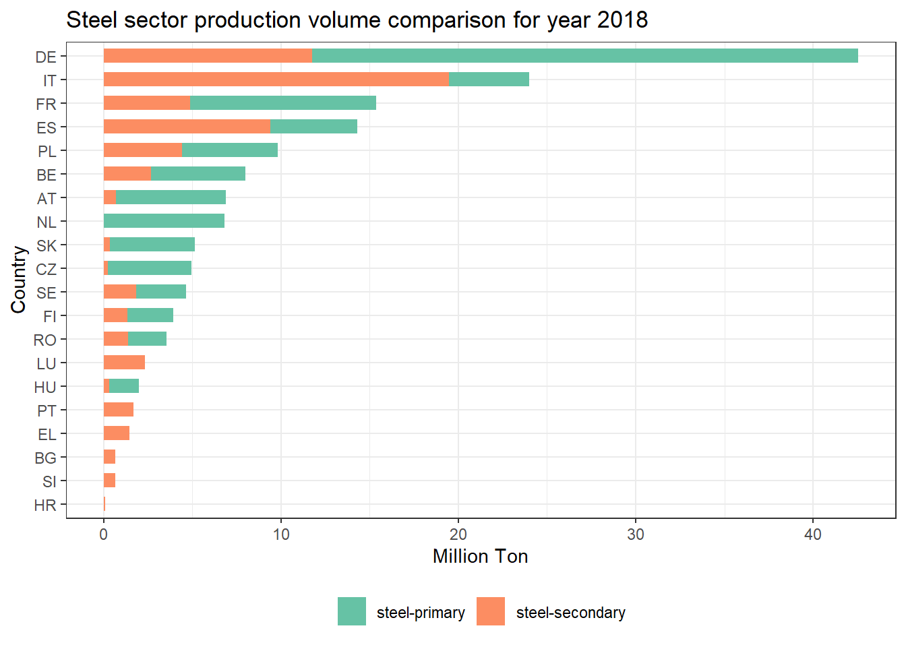

This is a stand-alone reproducible quarto document with code chunks and documentation for benchmarking Steel production and energy consumption in AIDRES, EUROSTAT.
It calibrates the AIDRES energy consumption w.r.t to EUROSTAT taking input from JRC-IDEES database. It generates comparison plots and tables to visualize and compare the steel production and energy consumption across those databases.
Finally, it calculates specific energy consumption values for additional processes (steel finishing, steel rolling) which are not part of AIDRES database.
Using this file
The files are produced using R and RStudio. Though this document can be executed using command line, it is recommended to use RStudio for rendering.
Clone this repository to your computer. Open the mopo_repo.Rproj (RStudio needs to be installed) file. Open refinery_analysis.qmd and click on render button (Crtl + Shift + K).
Loading libraries
Checking whether the required packages are installed or not. If not, install them and load them. If they are already installed, just load them.
# A tibble: 27 × 2
country country_iso_code
<chr> <chr>
1 Austria AT
2 Belgium BE
3 Bulgaria BG
4 Croatia HR
5 Cyprus CY
6 Czechia CZ
7 Denmark DK
8 Estonia EE
9 Finland FI
10 France FR
# ℹ 17 more rows
AIDRES Steel production and energy consumption
AIDRES database is open source (Vermeiren et al. 2023). However the data is available as a raw .sql file which needs to be further used to setup a PostgreSQL database connection to fetch various tables. The data is also available as an Excel workbook. However, it is very customized to be used for specific analysis.
Importing AIDRES and AIDRES 2.0 data from local .csv files
However, for an external user setting up a PostgreSQL server is not straight forward. Therefore, AIDRES tables are provided with this repository in the input_data\aidres_data directory.
the AIDRES tables used for this analysis are first exported into .csv files and then they are used further in the analysis. Following code chunks create the directory (input_data\aidres_data) for storing the AIDRES files, and exports the AIDRES data files into .csv format. However, they are currently deactivated as we provide the files already with the repo.
Show the code
aidres_data <-here('input_data', 'aidres_data')if (!dir.exists(aidres_data)){print("AIDRES input data folder doesn't exist. Request VITO to provide the data")dir.create(aidres_data)} else {print("AIDRES input data directory already exists. Not creating a new one!")print("AIDRES data tables also exist!")}
[1] "AIDRES input data directory already exists. Not creating a new one!"
[1] "AIDRES data tables also exist!"
The AIDRES data tables namely aidres_scenarios.csv, aidres_sectors.csv, aidres_result.csv, aidres_configurations.csv, aidres_perton.csv are made available in the input_data\aidres_data folder. The code chunk is currently deactivated.
Dumping AIDRES PSQL tables to .csv files (One time run. Currently deactivated)
# A tibble: 338 × 9
country_code country indicators cement chemical fertiliser glass refineries
<chr> <chr> <chr> <dbl> <dbl> <dbl> <dbl> <dbl>
1 AT Austria alternative… 3.12 0 0 0 0
2 AT Austria biomass_pj_y 0 0 0 0 0
3 AT Austria biomass_was… 1.87 0 0 0 0
4 AT Austria coal_pj_y 4.85 0 0 0 0
5 AT Austria coke_pj_y 0 0 0 0 0
6 AT Austria crude_oil_p… 0 0 0 0 416.
7 AT Austria electricity… 1.22 1.56 0.795 0.619 0.888
8 AT Austria hydrogen_pj… 0 0 0 0.025 0
9 AT Austria methanol_pj… 0 0 0 0 0
10 AT Austria naphtha_pj_y 0 77.0 0 0 0
# ℹ 328 more rows
# ℹ 1 more variable: steel <dbl>
First we calculate Energy consumption by different production routes in different sectors (AIDRES 2.0).
# A tibble: 234 × 4
country_code country fuel steel_aidres
<chr> <chr> <chr> <dbl>
1 AT Austria electricity 5.16
2 AT Austria hydrogen 0
3 AT Austria methanol 0
4 AT Austria natural_gas 0.134
5 AT Austria total 122.
6 AT Austria solid_fossil_fuels 117.
7 AT Austria renew_bio 0
8 AT Austria non_renew_waste 0
9 AT Austria oil_petro_products 0
10 BE Belgium electricity 7.55
# ℹ 224 more rows
Filtering out Steel sector energy consumption and aggregating fuels to EUROSTAT aggregated commodities (AIDRES 2.0).
# A tibble: 468 × 4
# Groups: country_code [26]
country_code country fuel steel_aidres
<chr> <chr> <chr> <dbl>
1 AT Austria ammonia 0
2 AT Austria bio_methanol_import 0
3 AT Austria bio_methanol_local 0
4 AT Austria bio_naphtha_import 0
5 AT Austria bio_naphtha_local 0
6 AT Austria biomass_import 0
7 AT Austria biomass_local 0
8 AT Austria electricity 5.16
9 AT Austria ethane 0
10 AT Austria hydrogen 0
# ℹ 458 more rows
EUROSTAT Steel energy consumption
Downloading Eurostat energy balance
EUROSTAT API is used to dynamically fetch EUROSTAT data using eurostat package (Lahti et al. 2017). Please refer this link to more about the usage of the eurostat package.
For steel sector aggregated energy balance data of EUROSTAT (nrg_bal_c) is used.
Show the code
dat_aggregated <-get_eurostat('nrg_bal_c', filters =list(time =2018),time_format ="num", type ='label', stringsAsFactors =TRUE)
Steel energy consumption
To calculate net energy consumption in the steel sector we consider the Transformation output, Transformation input, and Energy use for the coke ovens and blast furnace also.
# A tibble: 216 × 4
country_code country fuel steel_eurostat
<chr> <chr> <chr> <dbl>
1 AT Austria electricity 13.8
2 AT Austria heat 0.299
3 AT Austria natural_gas 2.22
4 AT Austria non_renew_waste 0.597
5 AT Austria oil_petro_products 0.0643
6 AT Austria renew_bio 0.0638
7 AT Austria solid_fossil_fuels 88.5
8 AT Austria total 105.
9 BE Belgium electricity 16.1
10 BE Belgium heat 0
# ℹ 206 more rows
Comparison of Steel sector energy consumption between AIDRES/AIDRES 2.0 and EUROSTAT
AIDRES and AIDRES 2.0 data still do not have energy consumption from steel finishing and rolling.
Creating output directory
The output directory outputs\steel is created to store all output files produced with this .qmd file.
Show the code
output_dir <-here('outputs', 'steel')if (!dir.exists(output_dir)){print("Output directory doesn't exist. Creating a new one!")dir.create(output_dir)} else {print("Output directory already exists. Not creating a new one!")}
[1] "Output directory doesn't exist. Creating a new one!"
Joining AIDRES/AIDRES 2.0 and EUROSTAT Steel energy consumption
# A tibble: 536 × 6
country_code country fuel sector source pj
<chr> <chr> <chr> <chr> <chr> <dbl>
1 AT Austria electricity steel eurostat 13.8
2 AT Austria electricity steel aidres 5.16
3 AT Austria heat steel eurostat 0.3
4 AT Austria heat steel aidres NA
5 AT Austria natural_gas steel eurostat 2.22
6 AT Austria natural_gas steel aidres 0.13
7 AT Austria non_renew_waste steel eurostat 0.6
8 AT Austria non_renew_waste steel aidres 0
9 AT Austria oil_petro_products steel eurostat 0.06
10 AT Austria oil_petro_products steel aidres 0
# ℹ 526 more rows
# A tibble: 1,004 × 6
country_code country fuel sector source pj
<chr> <chr> <chr> <chr> <chr> <dbl>
1 AT Austria electricity steel eurostat 13.8
2 AT Austria electricity steel aidres 5.16
3 AT Austria heat steel eurostat 0.3
4 AT Austria heat steel aidres NA
5 AT Austria natural_gas steel eurostat 2.22
6 AT Austria natural_gas steel aidres 0.13
7 AT Austria non_renew_waste steel eurostat 0.6
8 AT Austria non_renew_waste steel aidres 0
9 AT Austria oil_petro_products steel eurostat 0.06
10 AT Austria oil_petro_products steel aidres 0
# ℹ 994 more rows
Plot
Total energy consumption only
Show the code
steel_eurostat_aidres |>filter(fuel =='total') |>filter(sector =='steel') |>ggplot(aes(pj, fct_reorder(country_code, pj, .fun=sum))) +geom_line()+geom_point(aes(colour = source), size =1.5) +theme_bw() +labs(title ='Total energy consumption in the steel sector in AIDRES and EUROSTAT',subtitle ='Rolling and finishing energy is missing in AIDRES database',y ='country',x ='PJ') +theme(legend.position ="bottom") +theme(legend.title =element_blank()) -> p3 p3
Show the code
ggsave(here(output_dir, 'steel_fec_compare_tot_no_fr.pdf'), width =14, height =8, units ='in', dpi =900)ggsave(here(output_dir, 'steel_fec_compare_tot_no_fr.svg'), width =12, height =7, units ='in', dpi =900)
Show the code
steel_eurostat_aidres_2_0 |>filter(fuel =='total') |>filter(sector =='steel') |>ggplot(aes(pj, fct_reorder(country_code, pj, .fun=sum))) +geom_line()+geom_point(aes(colour = source), size =1.5) +theme_bw() +labs(title ='Total energy consumption in the steel sector in AIDRES 2.0 and EUROSTAT',subtitle ='Rolling and finishing energy is missing in AIDRES 2.0 database',y ='country',x ='PJ') +theme(legend.position ="bottom") +theme(legend.title =element_blank()) -> p3 p3
Show the code
ggsave(here(output_dir, 'steel_fec_compare_tot_no_fr_2_0.pdf'), width =14, height =8, units ='in', dpi =900)ggsave(here(output_dir, 'steel_fec_compare_tot_no_fr_2_0.svg'), width =12, height =7, units ='in', dpi =900)
Total energy consumption by fuel
Show the code
steel_eurostat_aidres |>filter(sector =='steel') |>ggplot(aes(pj, fct_reorder(country_code, pj, .fun=sum))) +geom_line()+geom_point(aes(colour = source), size =1.5) +facet_wrap(~fuel, ncol =5, scales ="free") +theme_bw() +labs(title ='Total energy consumption by fuel in the steel sector in AIDRES and EUROSTAT',subtitle ='Rolling and finishing energy is missing in AIDRES database',y ='country',x ='PJ')+theme(legend.title =element_blank()) -> p20 p20
Show the code
ggsave(here(output_dir, 'steel_fec_compare_fuel_no_fr.pdf'), width =16, height =8, units ='in', dpi =900)ggsave(here(output_dir, 'steel_fec_compare_fuel_no_fr.svg'), width =12, height =7, units ='in', dpi =900)
Show the code
steel_eurostat_aidres_2_0 |>filter(sector =='steel') |>ggplot(aes(pj, fct_reorder(country_code, pj, .fun=sum))) +geom_line()+geom_point(aes(colour = source), size =1.5) +facet_wrap(~fuel, ncol =5, scales ="free") +theme_bw() +labs(title ='Total energy consumption by fuel in the steel sector in AIDRES 2.0 and EUROSTAT',subtitle ='Rolling and finishing energy is missing in AIDRES 2.0 database',y ='country',x ='PJ')+theme(legend.title =element_blank()) -> p20 p20

Show the code
ggsave(here(output_dir, 'steel_fec_compare_fuel_no_fr_2_0.pdf'), width =16, height =8, units ='in', dpi =900)ggsave(here(output_dir, 'steel_fec_compare_fuel_no_fr_2_0.svg'), width =12, height =7, units ='in', dpi =900)
# A tibble: 270 × 5
country_code country fuel aidres eurostat
<chr> <chr> <chr> <dbl> <dbl>
1 AT Austria electricity 5.16 13.8
2 AT Austria heat 0 0.3
3 AT Austria hydrogen 0 0
4 AT Austria methanol 0 0
5 AT Austria natural_gas 0.13 2.22
6 AT Austria non_renew_waste 0 0.6
7 AT Austria oil_petro_products 0 0.06
8 AT Austria renew_bio 0 0.06
9 AT Austria solid_fossil_fuels 117. 88.5
10 AT Austria total 122. 105.
# ℹ 260 more rows
# A tibble: 564 × 12
country_code country ammonia bio_methanol_import bio_methanol_local
<chr> <chr> <dbl> <dbl> <dbl>
1 AT Austria 0 0 0
2 AT Austria 0 0 0
3 AT Austria 0 0 0
4 AT Austria 0 0 0
5 AT Austria 0 0 0
6 AT Austria 0 0 0
7 AT Austria 0 0 0
8 AT Austria 0 0 0
9 AT Austria 0 0 0
10 AT Austria 0 0 0
# ℹ 554 more rows
# ℹ 7 more variables: bio_naphtha_import <dbl>, bio_naphtha_local <dbl>,
# biomass_import <dbl>, biomass_local <dbl>, fuel <chr>, aidres <dbl>,
# eurostat <dbl>
Diff files
The data containing product flow values from the three sources are exported into an Excel workbook for further analysis. NA values are replaced by 0.
Adding rolling and finishing energy from JRC-IDEES
AIDRES/AIDRES 2.0 data still does not have energy consumption from steel finishing and rolling. JRC IDEES has breakup of total energy consumption of the whole steel sector in various sub-parts like rolling and finishing. Rolling and finishing data is taken from IRC IDEES and added on top of AIDRES final energy consumption by fuel. The resulting ‘total’ final energy is then compared with EUROSTAT data. Steel production data is also compared between JRC IDEES and AIDRES
JRC-IDEES Steel Production volume, Rolling, and Finishing Energy
JRC-IDEES database is used first to produce historical trends of primary and secondary steel production in countries and then compare with AIDRES for the year 2018.
Subsequently, energy consumption for rolling and finishing is taken from JRC-IDEES and added to AIDRES/AIDRES 2.0 for calibration.
Download IDEES excel files
JRC‑IDEES provides a consistent set of disaggregated energy-economy-emissions data for each Member State of the European Union, covering all sectors of the energy system for the 2000-2021 period: industry, buildings, transport, and power generation. This data complies with Eurostat energy balances while providing a plausible decomposition of energy consumption into specific processes and end uses(Mate et al. 2024).
Checking whether there is a directory (./input_data/jrc_idees_2021/energy_balance) containing JRC-IDEES excel files for energy balance. If not (only checking with JRC-IDEES-2021_EnergyBalance_AT.xlsx), creating the directory, downloading the zipped files, and extracting them for each country.
Show the code
idees_data <-here('input_data', 'jrc_idees_2021', 'industry')if (!dir.exists(idees_data)){print("Directory doesn't exists! Creating one")dir.create(idees_data, recursive =TRUE)print("Downloading files")for(country_code in country_codes$country_iso_code){ zip_file <-paste0("https://jeodpp.jrc.ec.europa.eu/ftp/jrc-opendata/JRC-IDEES/JRC-IDEES-2021_v1/JRC-IDEES-2021_", country_code) filename <-paste0("JRC-IDEES-2021_Industry_", country_code, ".xlsx")archive_extract(archive = zip_file,dir = idees_data,files = filename) } } else {print(paste('Directory', idees_data, 'already exists!'))if(!file.exists(here(idees_data, 'JRC-IDEES-2021_Industry_AT.xlsx'))){print("But files does not exists! downloading them")for(country_code in country_codes$country_iso_code){ zip_file <-paste0("https://jeodpp.jrc.ec.europa.eu/ftp/jrc-opendata/JRC-IDEES/JRC-IDEES-2021_v1/JRC-IDEES-2021_", country_code) filename <-paste0("JRC-IDEES-2021_Industry_", country_code, ".xlsx")archive_extract(archive = zip_file,dir = idees_data,files = filename) } } else {print(paste('Files also already exist inside the directory, not downloading them again!')) }}
[1] "Directory C:/Users/VDPUTH/OneDrive - VITO/Mopo/Mopo_repo_github/technology-catalogue-and-gap-analysis/input_data/jrc_idees_2021/industry already exists!"
[1] "Files also already exist inside the directory, not downloading them again!"
Primary and secondary steel production in 2018
Excel files have been copied manually into a folder inside the working directory. Creating functions to read all the excel files into a dataframe from a directory.
As AIDRES/AIDRES 2.0 does not include the energy consumption for refining, rolling, and finishing, these information are taken from JRC-IDEES database.
# A tibble: 324 × 5
country_code product fuel finish_gj_idees country_share_finish
<chr> <chr> <chr> <dbl> <dbl>
1 AT steel-primary total 3759333. 1
2 AT steel-secondary total 275271. 1
3 BE steel-primary total 5116184. 1
4 BE steel-secondary total 939012. 1
5 BG steel-primary total 0 1
6 BG steel-secondary total 868512. 1
7 CY steel-primary total 0 1
8 CY steel-secondary total 0 1
9 CZ steel-primary total 3502737. 1
10 CZ steel-secondary total 89484. 1
# ℹ 314 more rows
Total rolling and finishing energy
Show the code
isi_tot_roll_finish <-left_join(isi_tot_finish, isi_tot_rolling, by =join_by(country_code, product, fuel))isi_tot_roll_finish
# A tibble: 324 × 7
country_code product fuel finish_gj_idees country_share_finish
<chr> <chr> <chr> <dbl> <dbl>
1 AT steel-primary total 3759333. 1
2 AT steel-secondary total 275271. 1
3 BE steel-primary total 5116184. 1
4 BE steel-secondary total 939012. 1
5 BG steel-primary total 0 1
6 BG steel-secondary total 868512. 1
7 CY steel-primary total 0 1
8 CY steel-secondary total 0 1
9 CZ steel-primary total 3502737. 1
10 CZ steel-secondary total 89484. 1
# ℹ 314 more rows
# ℹ 2 more variables: rolling_gj_idees <dbl>, country_share_roll <dbl>
Calculate total rolling and finishing energy for AIDRES/AIDRES 2.0 Steel production
To calculate the total energy consumption for rolling and finishing of steel (for AIDRES production volume) we first calculate the specific energy consumption of finishing and rolling by fuel using 2018 steel production and energy consumption data of JRC-IDEES.
Joining production volume, rolling, and finishing energy
Calculate fuel specific energy consumption factors for finishing and rolling
# A tibble: 120 × 4
country_code fuel finishing_pj rolling_pj
<chr> <chr> <dbl> <dbl>
1 AT electricity 1.06 4.52
2 AT natural_gas 2.62 8.28
3 AT oil_petro_products 0.0107 0.0438
4 AT renew_bio 0.0126 NA
5 AT solid_fossil_fuels 0.329 NA
6 AT total 4.03 12.8
7 BE electricity 1.88 6.66
8 BE natural_gas 3.27 8.38
9 BE oil_petro_products 0.208 0.340
10 BE renew_bio 0.0701 NA
# ℹ 110 more rows
# A tibble: 120 × 4
country_code fuel finishing_pj rolling_pj
<chr> <chr> <dbl> <dbl>
1 AT electricity 1.06 4.52
2 AT natural_gas 2.62 8.28
3 AT oil_petro_products 0.0107 0.0438
4 AT renew_bio 0.0126 NA
5 AT solid_fossil_fuels 0.329 NA
6 AT total 4.03 12.8
7 BE electricity 1.88 6.66
8 BE natural_gas 3.27 8.38
9 BE oil_petro_products 0.208 0.340
10 BE renew_bio 0.0701 NA
# ℹ 110 more rows
Add finishing and rolling data with EUROSTAT and AIDRES/AIDRES 2.0 data
# A tibble: 536 × 6
country_code country fuel sector source pj
<chr> <chr> <chr> <chr> <chr> <dbl>
1 AT Austria electricity steel eurostat 13.8
2 AT Austria electricity steel aidres 10.7
3 AT Austria heat steel eurostat 0.3
4 AT Austria heat steel aidres 0
5 AT Austria natural_gas steel eurostat 2.22
6 AT Austria natural_gas steel aidres 11.0
7 AT Austria non_renew_waste steel eurostat 0.6
8 AT Austria non_renew_waste steel aidres 0
9 AT Austria oil_petro_products steel eurostat 0.06
10 AT Austria oil_petro_products steel aidres 0.0545
# ℹ 526 more rows
# A tibble: 1,004 × 6
country_code country fuel sector source pj
<chr> <chr> <chr> <chr> <chr> <dbl>
1 AT Austria electricity steel eurostat 13.8
2 AT Austria electricity steel aidres 10.7
3 AT Austria heat steel eurostat 0.3
4 AT Austria heat steel aidres 0
5 AT Austria natural_gas steel eurostat 2.22
6 AT Austria natural_gas steel aidres 11.0
7 AT Austria non_renew_waste steel eurostat 0.6
8 AT Austria non_renew_waste steel aidres 0
9 AT Austria oil_petro_products steel eurostat 0.06
10 AT Austria oil_petro_products steel aidres 0.0545
# ℹ 994 more rows
Plotting and diff files
Plot
plotting with fuel categories
Show the code
#|warning: falsedata_all_finishing_rolling |>ggplot(aes(pj, fct_reorder(country_code, pj, .fun = sum))) +geom_line()+geom_point(aes(colour = source), size =1.5) +facet_wrap(~fuel, ncol =5, scales ="free") +theme_bw() +labs(title ='Fuel wise total energy consumption in the steel sector in AIDRES and EUROSTAT for the year 2018',subtitle ='Rolling and finishing energy is included in AIDRES database from JRC-IDEES',y ='country',x ='PJ') +theme(legend.title =element_blank())-> p4 p4
Warning: `fct_reorder()` removing 52 missing values.
ℹ Use `.na_rm = TRUE` to silence this message.
ℹ Use `.na_rm = FALSE` to preserve NAs.
`fct_reorder()` removing 52 missing values.
ℹ Use `.na_rm = TRUE` to silence this message.
ℹ Use `.na_rm = FALSE` to preserve NAs.
Warning: Removed 52 rows containing missing values or values outside the scale range
(`geom_point()`).
Show the code
ggsave(here(output_dir, 'steel_fec_compare_fuel_fr.pdf'), width =16, height =8, units ='in', dpi =900)
Warning: `fct_reorder()` removing 52 missing values.
ℹ Use `.na_rm = TRUE` to silence this message.
ℹ Use `.na_rm = FALSE` to preserve NAs.
Warning: `fct_reorder()` removing 52 missing values.
ℹ Use `.na_rm = TRUE` to silence this message.
ℹ Use `.na_rm = FALSE` to preserve NAs.
Warning: Removed 52 rows containing missing values or values outside the scale range
(`geom_point()`).
Show the code
ggsave(here(output_dir, 'steel_fec_compare_fuel_fr.svg'), width =12, height =7, units ='in', dpi =900)
Warning: `fct_reorder()` removing 52 missing values.
ℹ Use `.na_rm = TRUE` to silence this message.
ℹ Use `.na_rm = FALSE` to preserve NAs.
Warning: `fct_reorder()` removing 52 missing values.
ℹ Use `.na_rm = TRUE` to silence this message.
ℹ Use `.na_rm = FALSE` to preserve NAs.
Warning: Removed 52 rows containing missing values or values outside the scale range
(`geom_point()`).
Show the code
#|warning: falsedata_all_finishing_rolling_2_0 |>ggplot(aes(pj, fct_reorder(country_code, pj, .fun = sum))) +geom_line()+geom_point(aes(colour = source), size =1.5) +facet_wrap(~fuel, ncol =5, scales ="free") +theme_bw() +labs(title ='Fuel wise total energy consumption in the steel sector in AIDRES 2.0 and EUROSTAT for the year 2018',subtitle ='Rolling and finishing energy is included in AIDRES 2.0 database from JRC-IDEES',y ='country',x ='PJ') +theme(legend.title =element_blank())-> p4 p4
Warning: `fct_reorder()` removing 286 missing values.
ℹ Use `.na_rm = TRUE` to silence this message.
ℹ Use `.na_rm = FALSE` to preserve NAs.
`fct_reorder()` removing 286 missing values.
ℹ Use `.na_rm = TRUE` to silence this message.
ℹ Use `.na_rm = FALSE` to preserve NAs.
Warning: Removed 286 rows containing missing values or values outside the scale range
(`geom_point()`).
Show the code
ggsave(here(output_dir, 'steel_fec_compare_fuel_fr_2_0.pdf'), width =16, height =8, units ='in', dpi =900)
Warning: `fct_reorder()` removing 286 missing values.
ℹ Use `.na_rm = TRUE` to silence this message.
ℹ Use `.na_rm = FALSE` to preserve NAs.
Warning: `fct_reorder()` removing 286 missing values.
ℹ Use `.na_rm = TRUE` to silence this message.
ℹ Use `.na_rm = FALSE` to preserve NAs.
Warning: Removed 286 rows containing missing values or values outside the scale range
(`geom_point()`).
Show the code
ggsave(here(output_dir, 'steel_fec_compare_fuel_fr_2_0.svg'), width =12, height =7, units ='in', dpi =900)
Warning: `fct_reorder()` removing 286 missing values.
ℹ Use `.na_rm = TRUE` to silence this message.
ℹ Use `.na_rm = FALSE` to preserve NAs.
Warning: `fct_reorder()` removing 286 missing values.
ℹ Use `.na_rm = TRUE` to silence this message.
ℹ Use `.na_rm = FALSE` to preserve NAs.
Warning: Removed 286 rows containing missing values or values outside the scale range
(`geom_point()`).
plotting only total energy
Show the code
#|warning: false data_all_finishing_rolling |>filter(fuel =='total') |>ggplot(aes(pj, fct_reorder(country_code, pj, .fun = sum))) +geom_line()+geom_point(aes(colour = source), size =1.5) +theme_bw() +labs(title ='Total energy consumption in the steel sector in AIDRES and EUROSTAT',subtitle ='Rolling and finishing energy is included in AIDRES database from JRC-IDEES for the year 2018',y ='country',x ='PJ') +theme(legend.position ="bottom") +theme(legend.title =element_blank()) -> p5 p5
Show the code
ggsave(here(output_dir, 'steel_fec_compare_tot_fr.pdf'), width =10, height =8, units ='in', dpi =900)ggsave(here(output_dir, 'steel_fec_compare_tot_fr.svg'), width =12, height =7, units ='in', dpi =900)
Show the code
#|warning: false data_all_finishing_rolling_2_0 |>filter(fuel =='total') |>ggplot(aes(pj, fct_reorder(country_code, pj, .fun = sum))) +geom_line()+geom_point(aes(colour = source), size =1.5) +theme_bw() +labs(title ='Total energy consumption in the steel sector in AIDRES 2.0 and EUROSTAT',subtitle ='Rolling and finishing energy is included in AIDRES 2.0 database from JRC-IDEES for the year 2018',y ='country',x ='PJ') +theme(legend.position ="bottom") +theme(legend.title =element_blank()) -> p5 p5
Show the code
ggsave(here(output_dir, 'steel_fec_compare_tot_fr_2_0.pdf'), width =10, height =8, units ='in', dpi =900)ggsave(here(output_dir, 'steel_fec_compare_tot_fr_2_0.svg'), width =12, height =7, units ='in', dpi =900)
We have obtained the rolling and finishing data from JRC-IDEES. We also calculate corresponding sec values. Now, we calibrate the AIDRES/AIDRES 2.0 final energy consumption w.r.t EUROSTAT values. Therefore, we subtract the total rolling and finishing energy from final energy of EUROSTAT. This constitute the ‘true’ energy consumption for the process routes ‘upto rolling and finishing’. Subsequently the sec factors are calculated for the process routes ‘upto rolling and finishing’.
Eurostat without finishing rolling
We subtract the finishing and rolling energy for AIDRES/AIDRES 2.0 steel production from total final energy consumption of EUROSTAT.
# A tibble: 268 × 5
country_code country fuel sector without_finishing_pj
<chr> <chr> <chr> <chr> <dbl>
1 AT Austria electricity steel 11.6
2 AT Austria heat steel 0.3
3 AT Austria natural_gas steel -3.02
4 AT Austria non_renew_waste steel 0.6
5 AT Austria oil_petro_products steel 0.0386
6 AT Austria renew_bio steel 0.0347
7 AT Austria solid_fossil_fuels steel 87.8
8 AT Austria total steel 97.4
9 BE Belgium electricity steel 12.4
10 BE Belgium heat steel 0
# ℹ 258 more rows
# A tibble: 502 × 5
country_code country fuel sector without_finishing_pj
<chr> <chr> <chr> <chr> <dbl>
1 AT Austria electricity steel 11.6
2 AT Austria heat steel 0.3
3 AT Austria natural_gas steel -3.02
4 AT Austria non_renew_waste steel 0.6
5 AT Austria oil_petro_products steel 0.0386
6 AT Austria renew_bio steel 0.0347
7 AT Austria solid_fossil_fuels steel 87.8
8 AT Austria total steel 97.4
9 BE Belgium electricity steel 12.4
10 BE Belgium heat steel 0
# ℹ 492 more rows
EUROSTAT doesn’t have primary/ secondary breakup. This is obtained from IDEES data.
Reading primary steel energy consumption from IDEES
# A tibble: 54 × 3
# Groups: country_code [27]
country_code prod_route prod_route_share
<chr> <chr> <dbl>
1 AT steel_primary 0.923
2 AT steel_secondary 0.0769
3 BE steel_primary 0.811
4 BE steel_secondary 0.189
5 BG steel_primary 0
6 BG steel_secondary 1
7 HR steel_primary 0
8 HR steel_secondary 1
9 CY steel_primary NaN
10 CY steel_secondary NaN
# ℹ 44 more rows
Applying primary, secondary energy (without rolling and finishing) to the EUROSTAT FEC (without rolling and finishing) to obtain primary, secondary breakup of energy consumption (without rolling and finishing)
# A tibble: 486 × 7
country_code country prod_route fuel fuel_share pj_route fuel_route_pj
<chr> <chr> <chr> <chr> <dbl> <dbl> <dbl>
1 AT Austria steel_primary elect… 0.130 89.9 11.7
2 AT Austria steel_secondary elect… 0.130 7.49 0.977
3 AT Austria steel_primary heat 0.00284 89.9 0.256
4 AT Austria steel_secondary heat 0.00284 7.49 0.021
5 AT Austria steel_primary natur… 0.0211 89.9 1.89
6 AT Austria steel_secondary natur… 0.0211 7.49 0.158
7 AT Austria steel_primary non_r… 0.00569 89.9 0.511
8 AT Austria steel_secondary non_r… 0.00569 7.49 0.043
9 AT Austria steel_primary oil_p… 0.000569 89.9 0.051
10 AT Austria steel_secondary oil_p… 0.000569 7.49 0.004
# ℹ 476 more rows
# A tibble: 918 × 8
country_code country prod_route py_naphtha fuel fuel_share pj_route
<chr> <chr> <chr> <dbl> <chr> <dbl> <dbl>
1 AT Austria steel_primary NA electric… 0.130 89.9
2 AT Austria steel_secondary NA electric… 0.130 7.49
3 AT Austria steel_primary NA heat 0.00284 89.9
4 AT Austria steel_secondary NA heat 0.00284 7.49
5 AT Austria steel_primary NA natural_… 0.0211 89.9
6 AT Austria steel_secondary NA natural_… 0.0211 7.49
7 AT Austria steel_primary NA non_rene… 0.00569 89.9
8 AT Austria steel_secondary NA non_rene… 0.00569 7.49
9 AT Austria steel_primary NA oil_petr… 0.000569 89.9
10 AT Austria steel_secondary NA oil_petr… 0.000569 7.49
# ℹ 908 more rows
# ℹ 1 more variable: fuel_route_pj <dbl>
Specific energy consumption factor upto finishing and rolling
# A tibble: 486 × 6
country_code country prod_route fuel production_route_name sec_gj_t
<chr> <chr> <chr> <chr> <chr> <dbl>
1 AT Austria steel_primary electric… BF-BOF 1.90
2 AT Austria steel_secondary electric… Scraps EAF 1.38
3 AT Austria steel_primary heat BF-BOF 0.0414
4 AT Austria steel_secondary heat Scraps EAF 0.0297
5 AT Austria steel_primary natural_… BF-BOF 0.306
6 AT Austria steel_secondary natural_… Scraps EAF 0.223
7 AT Austria steel_primary non_rene… BF-BOF 0.0827
8 AT Austria steel_secondary non_rene… Scraps EAF 0.0607
9 AT Austria steel_primary oil_petr… BF-BOF 0.00826
10 AT Austria steel_secondary oil_petr… Scraps EAF 0.00565
# ℹ 476 more rows
# A tibble: 918 × 7
country_code country prod_route py_naphtha fuel production_route_name
<chr> <chr> <chr> <dbl> <chr> <chr>
1 AT Austria steel_primary NA electr… BF-BOF
2 AT Austria steel_secondary NA electr… Scraps EAF
3 AT Austria steel_primary NA heat BF-BOF
4 AT Austria steel_secondary NA heat Scraps EAF
5 AT Austria steel_primary NA natura… BF-BOF
6 AT Austria steel_secondary NA natura… Scraps EAF
7 AT Austria steel_primary NA non_re… BF-BOF
8 AT Austria steel_secondary NA non_re… Scraps EAF
9 AT Austria steel_primary NA oil_pe… BF-BOF
10 AT Austria steel_secondary NA oil_pe… Scraps EAF
# ℹ 908 more rows
# ℹ 1 more variable: sec_gj_t <dbl>
# A tibble: 297 × 8
country_code country prod_route fuel production_route_name sec_norf_gj_t
<chr> <chr> <chr> <chr> <chr> <dbl>
1 AT Austria steel_primary elec… BF-BOF 1.90
2 AT Austria steel_primary heat BF-BOF 0.0414
3 AT Austria steel_primary natu… BF-BOF 0.306
4 AT Austria steel_primary non_… BF-BOF 0.0827
5 AT Austria steel_primary oil_… BF-BOF 0.00826
6 AT Austria steel_primary rene… BF-BOF 0.00826
7 AT Austria steel_primary soli… BF-BOF 12.2
8 AT Austria steel_primary hydr… BF-BOF NA
9 AT Austria steel_primary meth… BF-BOF NA
10 AT Austria steel_seconda… elec… Scraps EAF 1.38
# ℹ 287 more rows
# ℹ 2 more variables: sec_finish_gj_t <dbl>, sec_roll_gj_t <dbl>
# A tibble: 561 × 9
country_code country prod_route py_naphtha fuel production_route_name
<chr> <chr> <chr> <dbl> <chr> <chr>
1 AT Austria steel_primary NA electric… BF-BOF
2 AT Austria steel_primary NA heat BF-BOF
3 AT Austria steel_primary NA natural_… BF-BOF
4 AT Austria steel_primary NA non_rene… BF-BOF
5 AT Austria steel_primary NA oil_petr… BF-BOF
6 AT Austria steel_primary NA renew_bio BF-BOF
7 AT Austria steel_primary NA solid_fo… BF-BOF
8 AT Austria steel_primary NA ammonia BF-BOF
9 AT Austria steel_primary NA bio_meth… BF-BOF
10 AT Austria steel_primary NA bio_meth… BF-BOF
# ℹ 551 more rows
# ℹ 3 more variables: sec_norf_gj_t <dbl>, sec_finish_gj_t <dbl>,
# sec_roll_gj_t <dbl>
# A tibble: 66 × 14
country_code country product process_route unit electricity heat
<chr> <chr> <chr> <chr> <chr> <dbl> <dbl>
1 AT Austria steel_primary finishing gj_t 0.16 NA
2 AT Austria steel_primary rolling gj_t 0.671 NA
3 AT Austria steel_secondary finishing gj_t 0.103 NA
4 AT Austria steel_secondary rolling gj_t 0.53 NA
5 BE Belgium steel_primary finishing gj_t 0.299 NA
6 BE Belgium steel_primary rolling gj_t 0.94 NA
7 BE Belgium steel_secondary finishing gj_t 0.108 NA
8 BE Belgium steel_secondary rolling gj_t 0.622 NA
9 BG Bulgaria steel_secondary finishing gj_t 0.274 NA
10 BG Bulgaria steel_secondary rolling gj_t 0.442 NA
# ℹ 56 more rows
# ℹ 7 more variables: natural_gas <dbl>, non_renew_waste <dbl>,
# oil_petro_products <dbl>, renew_bio <dbl>, solid_fossil_fuels <dbl>,
# hydrogen <dbl>, methanol <dbl>
# A tibble: 66 × 23
country_code country product process_route unit py_naphtha electricity heat
<chr> <chr> <chr> <chr> <chr> <dbl> <dbl> <dbl>
1 AT Austria steel_… finishing gj_t NA 0.16 NA
2 AT Austria steel_… rolling gj_t NA 0.671 NA
3 AT Austria steel_… finishing gj_t NA 0.103 NA
4 AT Austria steel_… rolling gj_t NA 0.53 NA
5 BE Belgium steel_… finishing gj_t NA 0.299 NA
6 BE Belgium steel_… rolling gj_t NA 0.94 NA
7 BE Belgium steel_… finishing gj_t NA 0.108 NA
8 BE Belgium steel_… rolling gj_t NA 0.622 NA
9 BG Bulgar… steel_… finishing gj_t NA 0.274 NA
10 BG Bulgar… steel_… rolling gj_t NA 0.442 NA
# ℹ 56 more rows
# ℹ 15 more variables: natural_gas <dbl>, non_renew_waste <dbl>,
# oil_petro_products <dbl>, renew_bio <dbl>, solid_fossil_fuels <dbl>,
# ammonia <dbl>, bio_methanol_import <dbl>, bio_methanol_local <dbl>,
# bio_naphtha_import <dbl>, bio_naphtha_local <dbl>, biomass_import <dbl>,
# biomass_local <dbl>, ethane <dbl>, hydrogen <dbl>, methanol <dbl>
Lahti, Leo, Janne Huovari, Markus Kainu, and Przemysław Biecek. 2017. “Retrieval and Analysis of Eurostat Open Data with the eurostat Package.”The R Journal 9 (1): 385–92. https://doi.org/10.32614/RJ-2017-019.
Vermeiren, Karolien, Wim Clymans, Lorenz Hambsch, and Leen Van Esch. 2023. “AIDRES - Advancing Industrial Decarbonization by Assessing the Future Use of Renewable Energies in Industrial Processes.” European Commission, Joint Research Centre. http://data.europa.eu/89h/14914982-70a9-4d1d-a2fc-cdee4a1d833d.